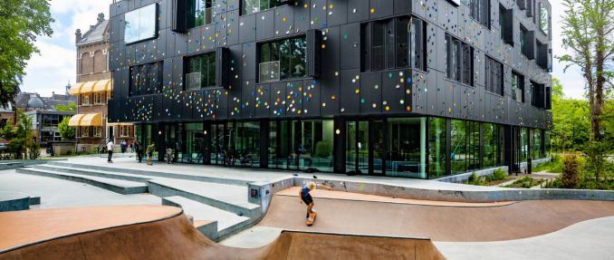

cariëre
 Ik zat eerst op de basis school. Op de basis school kreeg ik te horen dat ik VWO had. Ik ging kijken naar scholen en ben op de school Metis Montessori Lyceum gekomen. Toen ik op de middelbaren kwam ging ik steeds hoger hockeyen. ik zat zelfs in een elftal waar de beste van heel noord in zitten. nu ben ik daar helaas uit.
Hobbies
Ik doe aan Hockey en heb op Tennis gezeten. Ik heb heel even gevist maar dat vond ik snel niet meer leuk.
Leuke feitjes
Mijn naam is Jasper.
Ik ben 14 jaar oud en word op 3 Januari 15.
Ik heb een broer en een broertje.